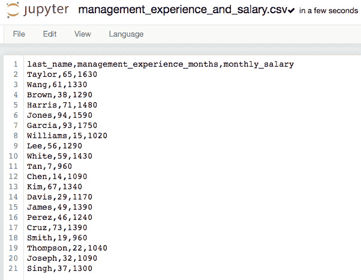

第1章:使用亚马逊SageMaker开始机器学习
机器学习 ( ML )是当今世界最重要的话题之一。通过使用不同的算法和模型，它可以解决不同的实际问题和需求，如异常检测、预测、垃圾邮件检测、图像分类等。在您的本地机器上进行一些实验将有助于事情的开始。然而，一旦我们需要处理涉及更大数据集、深度学习需求和生产级模型部署的端到端实验，我们将需要一套更专用的解决方案来帮助我们有效地管理这些实验。
这就是亚马逊SageMaker的目标。 Amazon SageMaker 是一个完全托管的ML服务，它汇集了不同的解决方案来加速准备、构建、培训和部署ML模型的过程。当我们阅读本书的每一章时，我们将看到它是如何在ML过程的不同阶段帮助更快地完成工作的。
图1.1–第1章配方
在这一介绍性章节中，我们将使用Amazon SageMaker执行一个简化的端到端ML实验。本章的目标是帮助我们熟悉并理解它能帮助我们快速训练和部署ML模型。如图1.1 所示，我们将看到Amazon sage maker如何适应ML流程。通过一个样本数据集，我们将致力于构建、分析和部署一个模型，该模型使用相关管理经验的月数来预测专业人员的工资。
我们将从启动Amazon SageMaker笔记本实例开始，在这里我们将运行我们的实验。一旦一切就绪，我们将使用 pandas 数据分析和操作库和 matplotlib 数据可视化库来可视化数据。之后，当训练我们的线性回归模型时，我们将使用 SageMaker Python SDK 。一旦我们生成了模型，我们将使用深度学习框架 Apache MXNet 来加载所创建的模型文件并提取线性模型的参数。我们还将使用sklearn库中的度量工具来评估我们在本章中准备的回归模型。在我们执行了模型评估步骤之后，我们将使用 SageMaker Python SDK 来将我们的模型部署到推理端点。最后，我们将使用boto3中的SageMakerRuntime客户端来调用我们部署的Amazon SageMaker推理端点。
我们将在本章中介绍以下配方:
- 发布一个亚马逊SageMaker笔记本实例
- 检查 SageMaker Python SDK 和 AWS CLI 的版本
- 为线性回归实验准备亚马逊S3 桶和训练数据集
- 在Python中可视化和理解数据
- 用Python训练您的第一个模型
- 用Python中的 Apache MXNet 加载一个线性学习器模型
- 在Python中评估模型
- 在Python中部署您的第一个模型
- 从boto3使用 SageMakerRuntime 客户端调用 Amazon SageMaker 模型端点
一旦我们完成了本章的食谱，我们将会对如何在ML过程的不同阶段使用 Amazon SageMaker 有一个很好的想法。记住这一点，让我们开始吧！
技术要求
只要你有一个现有的 AWS 账户，接下来的步骤将是小菜一碟。如果您仍然没有AWS帐户，请随时查看 AWS自由层页面，并点击创建自由帐户:https://aws.amazon.com/free/。点击创建免费账户按钮后，你将被重定向到注册AWS 页面，如图图1.2 所示:
图1.2–注册AWS
您需要做的就是完成这里的步骤来完成注册过程。每个章节使用的Jupyter笔记本、源代码和CSV文件都可以在这个资源库中获得:https://github . com/packt publishing/Machine-Learning-with-Amazon-sage maker-Cookbook/tree/master/chapter 01。
请点击以下链接查看动作视频中的相关代码:
发布亚马逊SageMaker笔记本实例
在这个菜谱中，我们将建立一个 Amazon SageMaker笔记本实例，在那里我们可以使用 Jupyter笔记本运行我们的ML实验。 SageMaker笔记本实例是一个完全托管的ML计算实例，运行一系列工具和应用，如 Jupyter笔记本应用。已经安装了几个工具和库并准备好使用，我们可以直接进入ML实验，而不必担心安装和维护工作。
重要说明
请注意，我们也可以在亚马逊SageMaker Studio 中执行我们的ML实验。我们再来仔细看看亚马逊SageMaker工作室第六章 中的第六章 ，亚马逊SageMaker中的自动机器学习。从我们的角度来看，知道如何使用这两者是至关重要的，因为将会有一些特性和功能，如本地模式，这在笔记本实例中受支持，但在亚马逊SageMaker Studio 中不受支持。
准备就绪
以下是这个配方的先决条件— (1)一个AWS帐户和(2)管理亚马逊SageMaker 和亚马逊S3 资源的权限(如果使用带有自定义URL的 AWS IAM 用户)。在大多数情况下，建议以AWS IAM用户身份登录，而不是使用root帐户。有关更多信息，请随意查看https://docs . AWS . Amazon . com/IAM/latest/user guide/best-practices . html。
怎么做……
在进行下一组步骤之前，确保屏幕右上角指定的AWS区域是您希望创建资源的区域。在这个菜谱中，我们将在 N. Virginia (us-east-1)地区创建我们的资源。您可以根据自己的需要随意更改:
- Click Services on the navigation bar. A list of services will be shown in the menu. Under Machine Learning, look for Amazon SageMaker and then click the link to navigate to the SageMaker console:
图1.3–服务菜单
图1.3 向我们展示了撰写本文时菜单的样子。随着AWS不断改善用户体验并定期添加新服务，当您读到本文时，用户界面可能已经不同了！
- In the navigation pane, click notebook instances under Notebook. This should open a page that shows all running notebooks (if any):
图1.4–亚马逊SageMaker仪表板
我们可以在图1.4 中看到亚马逊SageMaker仪表盘。导航窗格位于屏幕的左侧。在笔记本下，我们有笔记本实例、生命周期配置和 Git存储库。
注意
我们将简要讨论生命周期配置脚本如何帮助我们自动化笔记本准备和配置步骤在还有更多… 部分为多个深度学习本地实验准备SageMaker笔记本实例配方在 第3章 ，使用机器学习和深度学习框架与Amazon SageMaker 。
- On the notebook instances page, click the Create notebook instance button:
图1.5–创建笔记本实例按钮
在图1.5 中，我们应该可以看到图像右上方的创建笔记本实例按钮。
- Fill out the details in the Create notebook instance form. Specify the notebook instance name and choose notebook-al1-v1 under Platform identifier:
图1.6–创建笔记本实例
在图1.6 中，我们有一个允许我们在创建笔记本实例之前管理笔记本实例设置的表单。
注意
在弹性推理 ( EI )下，我们可以选择指定一个EI加速器类型(例如ml.eia2.medium)。EI加速器有助于减少推理端点执行预测所需的时间。将EI加速器附加到笔记本实例将允许我们在本地构建模型时测试和评估推理性能。因为我们现在不需要它，所以我们将把它设置为none。请注意，EI加速器也可以附加到SageMaker托管的端点上，以很小的成本提高推理性能。为什么这很重要？当然，推断端点执行预测的速度越快越好。关于这个话题的更多信息，请随时参考https://docs.aws.amazon.com/sagemaker/latest/dg/ei.html。
- Under IAM role, choose Create a new role:
图1.7–创建新角色
在图1.7 中，我们可以看到 IAM角色下不同的可能配置选项。什么是 IAM角色？IAM角色是一个IAM身份，用于委托对实体和资源的访问。该角色可由资源承担，以获得执行特定任务所需的权限。在我们的例子中，我们将为notebook实例创建一个角色来调用其他服务和访问特定的资源。
- Select Any S3 bucket under S3 buckets you specify and then click Create role:

图1.8–创建IAM角色
在图1.8 中，我们选择了任意S3桶选项。为了更安全的设置，我们可以选择特定的S3桶选项。对于这一章中的食谱，任何S3桶选项都可以。
重要说明
请注意，我们为这个示例指定的安全配置应该仅用于开发目的。当处理生产级需求时，需要实现更安全的配置。在这种情况下，我们可以选择这种形式的具体S3桶。另一种选择是在IAM控制台中准备一个更严格的IAM角色，并在创建notebook实例时使用它。
- After successfully creating an IAM role, choose Enable for Root access and No Custom Encryption for Encryption key:
图1.9–权限和加密
正如我们在图1.9 中看到的，我们允许笔记本实例的用户进行root访问。启用root访问意味着用户可以安装新软件，甚至修改实例中的系统关键文件。
- Choose No VPC under VPC - optional:
图1.10–网络配置
从图1.10 中可以看出，我们将网络配置设置为无VPC 。鉴于我们只是使用合成和虚拟数据集进行一些测试实验，因此无VPC 选项将会成功。我们可以选择一个VPC，并根据安全需要和要求指定是启用还是禁用直接互联网访问。在这个配方中，我们将使用中的没有VPC 的配置。
- Choose Clone a public Git repository to this notebook instance only under Repository and set the field value under Git repository URL to https://github.com/PacktPublishing/Machine-Learning-with-Amazon-SageMaker-Cookbook:
图1.11–将公共Git存储库克隆到笔记本实例
在图1.11 中，我们选择了允许我们将公共Git存储库克隆到笔记本实例的选项。另一个选项是添加一个存储库到Amazon SageMaker 选项，它允许我们关联需要凭证的私有Git存储库。我们也可以将一个没有凭证的公共Git存储库与帐户相关联。假设我们想要将这本书的笔记本菜谱克隆到笔记本实例，我们将选择仅将公共Git存储库克隆到这个笔记本实例选项。
- Optionally, you may specify tags. Specify Environment under Key and development under Value:
图1.12–添加标签
我们可以在图1.12 中看到，我们已经为将要创建的资源添加了一个可选标签。如果您使用AWS已经有一段时间了，您可能会意识到最好使用标记分配元数据来管理资源。这些标签对于成本分配和安全风险管理特别有用。如果你想了解更多这方面的内容，请查看以下链接:https://D1 . AWS static . com/white papers/AWS-tagging-best-practices . pdf。
- Click on the Create notebook instance button after the last section of the form to start the notebook creation process. You will be directed back to the Notebook instances page, as shown in the following screenshot:
图1.13–正在创建笔记本实例
在图1.13 中，我们可以看到，在完成表单后，笔记本实例将在几分钟内处于挂起状态，同时它正在被供应。
- 一旦状态变为运行，点击打开Jupyter :
图1.14–处于使用中状态的笔记本实例
从图1.14 中可以看出，一旦笔记本实例的状态变为在用，在动作下就会出现打开Jupyter 和打开JupyterLab 链接。点击打开Jupyter 应该会打开一个新的选项卡，显示一个类似于下面截图所示的页面:
图1.15–Jupyter
在图1.15 中，我们可以看到我们在笔记本实例创建步骤中指定的Git存储库已经被克隆到Jupyter工作目录中。
现在我们已经设置好了一切，我们应该准备好本章的下一个食谱了！
工作原理……
正如本文开头提到的,sage maker笔记本实例是一个完全托管的计算实例，运行一系列工具和应用程序，帮助数据科学家和ML实践者立即进行ML实验。以下是笔记本实例中已经可用的一些工具和应用程序。如果我们自己进行设置，可能需要一些时间才能让这些工具正常工作:
- 木星笔记本和木星实验室
- Jupyter内核和Python包，如 SageMaker Python SDK 、 scikit-learn 、 TensorFlow 和 Apache MXNet
- Jupyter R内核连同的 reticulate 库一起预装在笔记本上
- AWS CLI
使用 SageMaker笔记本实例时，建议在进行实验时尽可能对笔记本实例使用较小的实例类型(例如ml.t2.medium)以降低成本。当然，在处理相对较大的数据集时，我们可以根据需要更新和升级notebook实例类型。如图图1.16 所示，笔记本实例通常大部分时间都在运行，用于培训的ML实例仅运行几分钟:
图1.16–对笔记本实例使用较小的实例类型，对用于培训作业的实例使用较大的实例类型
请注意，使用较大的实例类型(如ml . m 5.2 xlage)比使用较小的实例类型(包括ml.t2.medium和ml.t3.medium实例)更昂贵。鉴于这些培训作业仅持续几分钟，使用较大实例类型的成本影响显著降低，因为一旦培训作业完成，这些实例就会自动删除。
重要说明
为了消除任何混淆，重要的是要注意在训练和处理作业期间创建的ML实例不同于我们运行脚本的原始笔记本实例。在我们使用estimator.fit()和 SageMaker Python SDK 运行训练作业之前，我们只有一个实例在运行——笔记本实例。在运行estimator.fit()函数时，我们将运行两个或更多实例——为笔记本实例运行的ML实例和为培训作业运行的一个或多个ML实例。训练作业完成后，为训练作业运行的ML实例被删除，我们又回到只有一个笔记本实例的状态。由于我们还没有使用 SageMaker Python SDK 进行模型训练和部署，这些细节可能还不完全有意义。不要担心，当我们完成本章的食谱时，这些笔记会更有意义。
在大多数情况下，在数据处理和训练步骤中使用较大的实例，在ML从业者执行和测试脚本的笔记本实例中使用较小的实例是更好的选择。
更多信息，请随时查看亚马逊SageMaker定价页面:https://aws.amazon.com/sagemaker/pricing/。
检查SageMaker Python SDK和AWS CLI的版本
在这个菜谱中，我们将检查运行conda_python3内核的笔记本中的 SageMaker Python SDK 版本。 SageMaker Python SDK 是一个帮助数据科学家和ML从业者在亚马逊SageMaker 上训练和部署ML模型的库。了解它的版本是非常重要的，因为版本1之间有几个不同之处。x和版本2。x的 SageMaker Python SDK 。在本书中，我们将使用2.X版本。
准备就绪
确保您已经完成了启动Amazon SageMaker笔记本实例并准备先决条件配方。
怎么做……
该配方中的第一组步骤集中于检查 SageMaker Python SDK 版本:
- Click New and then choose conda_python3 in the drop-down list:
图1.17–使用conda_python3内核创建新笔记本
我们可以在图1.17 中看到，在创建新笔记本时，有几种环境可供选择。在列表的顶部，我们有 R 环境，它允许熟悉并有经验使用R语言的数据科学家使用R、reticulate和 SageMaker Python SDK 进行ML实验。你没听错！我们可以在R中使用Python库，并通过reticulate包来实现。我们还拥有允许我们立即使用不同的ML和深度学习库、框架和工具的环境。其中包括已经安装了 TensorFlow 、 PyTorch 、 Chainer 和 MXNet 的环境。
- A new tab will open. Click File > Rename…:
图1.18–新笔记本电脑
在图1.18 中，我们有一个新笔记本，其名称最初设置为无标题。有两种方法可以重命名此笔记本。第一种是点击文件菜单，然后点击重命名...。另一种方法是点击Jupyter标志和最后一个检查点文本之间的无标题文本。
- A popup will open. Specify First Notebook as the new notebook name and then click Rename:
图1.19-重命名笔记本
我们指定新的笔记本名称，如图图1.19 所示。请注意，即使这看起来是一个简单的步骤，相应地命名事物并保持事物有条理将帮助我们在长期内完成更多的事情。
- In the code cell in the Jupyter notebook, run the following lines of code to see the version of the SageMaker Python SDK installed:
import sagemaker sagemaker.__version__
我们应该得到2分。运行这几行代码后的X.X值:
图1.20–检查SageMaker Python SDK版本
如图图1.20 所示，我们使用的是版本2。 SageMaker Python SDK 的x。如果您使用的是较低版本的 SageMaker Python SDK ，请运行以下命令安装最新版本！pip安装-升级笔记本电脑单元内的sagemaker。命令前的感叹号允许我们执行终端命令，而不必打开单独的终端。
注意
有关使用版本2的的更多信息，请参考本页。 SageMaker Python SDK 的x:https://sagemaker.readthedocs.io/en/stable/v2.html。
该方法中的下一组步骤集中在检查 AWS CLI 版本和操作系统细节。什么是AWS CLI？ AWS命令行界面 (AWS CLI)帮助我们从命令行控制多个AWS服务和管理资源。
- Click on the Jupyter logo to go back to the root page. Next, create a new Terminal by clicking New and then choosing Terminal in the drop-down list:
图1.21–创建新的终端
我们可以在图1.21 中看到端子选项在列表的底部。选择终端选项将打开一个类似于图1.22 所示的新标签:
图1.22–新终端
这个终端允许我们执行bash命令并使用命令行工具，如 AWS CLI 。我们还可以使用sudo yum install命令在notebook实例中安装包。
- Next, we check the version of the AWS CLI tool installed:
aws --version
您应该得到一个类似AWS-CLI/1 . 19 . 22 Python/3 . 6 . 13 Linux/4 . 14 . 219-119.340 . amzn 1 . x86 _ 64 boto core/1 . 20 . 22的值。
- Check the operating system details by reading the /etc/os-release file:
cat /etc/os-release
您应该会得到类似于以下屏幕截图所示的操作系统详细信息:
图1.23–sage maker笔记本实例操作系统详情
在图1.23 中，我们可以看到我们正在使用Amazon Linux AMI 2018.03处理一个实例。现在我们知道了我们正在使用的笔记本实例的操作系统细节，如果shell命令或安装脚本不能立即工作，那么调试问题就容易多了。
现在我们对本书中使用的工具和版本有了更好的理解，我们可以在下一个食谱中继续进行ML实验了！
它是如何工作的……
SageMaker Python SDK 帮助数据科学家和ML实践者使用Python库进行ML实验，该库抽象了底层API操作，这使其与 Boto3 AWS SDK for Python 有所区别。 SageMaker Python SDK 利用抽象层和概念如模型、估计器和预测器，fit()和deploy()函数类似于库和框架如Keras和 scikit-learn 所拥有的。
在这个食谱中，我们使用了sagemaker。__version__检查 SageMaker Python SDK 的版本。这很重要，因为我们试图避免使用版本1。在开始任何实验之前。如果您需要从版本1迁移现有笔记本。x到版本2。十、参考此链接:https://sagemaker.readthedocs.io/en/stable/v2.html。AWS CLI 也是如此。尽可能使用最新版本的命令行工具非常重要。如果您使用的是旧版本的 AWS CLI ，请参考此链接并将其升级到新版本:https://docs . AWS . Amazon . com/CLI/latest/user guide/CLI-chap-install . html。
在菜谱的最后，我们通过检查/etc/os-release文件检查了操作系统的详细信息。假设我们正在使用一个使用 Amazon Linux AMI 的实例，当我们需要安装软件包时，我们将使用sudo yum install命令而不是sudo apt install。请随意查看https://aws.amazon.com/amazon-linux-ami/获取更多关于这个Linux镜像的信息。
为线性回归实验准备亚马逊S3桶和训练数据集
在这个菜谱中，我们将在终端内使用 AWS CLI 创建一个亚马逊S3 bucket。当我们在本章中执行不同的配方时，这个 S3 桶将包含输入和输出文件。如果这是你第一次听说亚马逊S3 ，这是一个对象存储服务，帮助用户存储他们的文件和数据。在本书的食谱中，当我们在进行ML实验时，我们将在亚马逊S3 中存储和下载不同的文件、数据集和日志。另一方面， AWS命令行界面(CLI) 是一个命令行实用程序，有助于控制和管理多个AWS服务和资源。在这个菜谱中，我们将使用它在终端中用aws s3 mb命令创建一个亚马逊S3 桶。
重要说明
请注意，本书中的大多数食谱都会将文件存储和加载到我们将在本食谱中创建的S3存储桶中。在这个S3桶里，我们将为这本书的每一章创建一个文件夹，以保持东西有条理。
我们还将准备用于本章剩余食谱的数据集。该数据集只有三列——姓氏、管理经验月份和月薪。除此之外，它将只有20个记录，因为这将足以准备我们的第一个线性学习者模型。我们有意试图保持事情简单，这样我们就可以专注于模型的训练、评估和部署，而不必在我们的第一次尝试中经历很多问题。
准备就绪
确保您已经完成了启动Amazon SageMaker笔记本实例和准备先决条件方法。
怎么做……
该配方中的第一组步骤集中在使用 AWS CLI 创建S3铲斗:
- Create a new Terminal by clicking New and then choosing Terminal in the drop-down list:
图1.24–创建新的终端
在图1.24 中，我们可以看到终端选项在列表的底部。选择终端选项将打开一个新的选项卡，类似于图1.25 中的所示:
图1.25–终端
在接下来的几个步骤中，我们将使用这个终端通过 AWS CLI 创建一个S3存储桶。
- Check the existing Amazon S3 buckets by using the aws s3 ls command:
aws s3 ls
这将帮助我们测试 AWS CLI 是否也已正确配置。
重要说明
如果出现无法定位凭证错误，这意味着在 AWS CLI 中没有正确配置AWS凭证。要解决此问题，请按照此页面上的步骤操作:https://AWS . Amazon . com/premium support/knowledge-center/S3-locate-credentials-error/。
- Create a new Amazon S3 bucket by using the aws s3 mb command. Make sure to specify a unique BUCKET_NAME before running the following block of code:
BUCKET_NAME=my-custom-s3-bucket-abcdef aws s3 mb s3://$BUCKET_NAME
如果bucket创建步骤成功，那么在使用aws s3 mb命令之后，您应该会看到与make_bucket:
类似的一行。同样，不要忘记将前面代码块中的my-custom-s3-bucket-abcdef替换为您选择的全局唯一的s3存储桶名称。 现在我们已经完成了S3存储桶的创建，下一组步骤集中在创建首选目录结构以及一个空的CSV文件。
- Now, let's print the working directory using the pwd command. Let's also check the files and directories in our current working directory using the ls command:
pwd ls
运行这些命令将生成类似于以下屏幕截图所示的输出:

图1.26-当前工作目录和当前工作目录中的文件
在图1.26 中，我们可以快速查看一下 SageMaker笔记本实例创建后的初始目录结构。我们可以看到这里也有目录用于SageMaker示例笔记本。这些示例笔记本是从这个库中自动提取的:https://github.com/aws/amazon-sagemaker-examples。
- Create the required directory structure using the mkdir command. We use the -p option to automatically create the subdirectories as well:
cd SageMaker mkdir -p my-experiments/chapter01/files ls -1ahF
运行这些命令将为我们提供类似于图1.27 所示的目录结构:
图1.27–my-experiments目录及其子目录已经创建
注意在图1.27 中，使用的命令是ls -1ahF，而不是ls-lahF(较短的短划线与较长的长划线)。确保使用数字1，而不是小写字母l。
- 使用以下命令导航到chapter01目录中的files目录:
cd my-experiments/chapter01/files
- 使用touch命令，创建一个空文件，文件名为management _ experience _ and _ salary . CSV:
touch management_experience_and_salary.csv
- 关闭终端浏览器选项卡。
- Navigate back to the Jupyter UI and click the Jupyter logo to go back to the home working directory:
图1.28–点击Jupyter标志
您将被重定向回工作目录，其中显示了使用Amazon-SageMaker-Cookbook学习的机器目录和我的实验目录:
图1.29-显示使用Amazon-SageMaker-Cookbook的机器学习和my-experiments目录的主目录
在图1.29 中，我们有自己偏好的目录结构。Amazon-SageMaker-Cookbook的机器学习目录包含我们的参考笔记本，my-experiments目录将包含我们在制作本书的食谱时从零开始准备的笔记本和文件。在我们完成这本书之后，my-experiments目录的内容应该类似于Machine-Learning-with-Amazon-sage maker-Cookbook目录中的内容。
- Navigate to the files directory by clicking my-experiments, chapter01, and then files:
图1.30–导航到文件目录中的CSV文件
如图图1.30 所示，我们在files目录下有management _ experience _ and _ salary . CSV文件。如果我们想跳回其中一个父目录，我们可以通过单击面包屑中的链接来实现。
- Click management_experience_and_salary.csv. This should open a new tab, as shown in the following screenshot:
图1.31–空CSV文件
在图1.31 中，我们可以看到一个空的management _ experience _ and _ salary . CSV文件。
- Update the values inside the comma-separated values (CSV) file and make sure that it contains the following records:
图1.32–我们将在本章中使用CSV数据来准备我们的线性回归模型
我们可以在图1.32 中看到一个3列21行的表格，包括表头。CSV文件应该有3列:姓氏、管理经验月份和月薪。
小费
您还可以从Machine-Learning-with-Amazon-sage maker-Cookbook/chapter 01目录中复制management _ experience _ and _ salary . CSV文件的内容。您也可以在这里找到存储库，并从Chapter01目录中复制必要的文件:https://github . com/packt publishing/Machine-Learning-with-Amazon-sage maker-Cookbook。
图1.33–包含训练数据的CSV文件
我们在图1.33 中有20行样本数据的CSV文件。我们如何解释这个CSV文件的内容？泰勒有65个月的管理经验，月薪1630美元。
- 最后点击文件打开文件菜单，然后点击保存。之后，您可以关闭浏览器选项卡，或者通过单击Jupyter徽标导航回主目录。
既然我们已经准备好了我们的训练数据集，现在我们可以继续ML过程中的下一步了！
工作原理……
这个菜谱的第一部分涉及使用 AWS CLI 创建一个亚马逊S3 bucket。正如您将在后面的食谱中看到的，我们将使用这个S3存储桶来存储ML实验的输入和输出文件。每当你在配方的代码块中看到<在此插入桶名>文本时，确保用该配方中使用的桶名更新和替换它们。
该方法的第二部分涉及创建CSV文件并用数据集值填充它。如您所见，我们有意使用一个小而简化的数据集。在开始使用ML时，有这样一种误解，即在训练模型时将大型数据集作为先决条件。当然，我们可以使用的数据越多，我们的结果就越好。然而，当我们试图第一次就让事情运转起来时，我们可以使用一个较小的数据集来帮助我们快速进行设置和实验。
注意
在本章中，我们将利用这个相对小而简单的数据集，通过使用线性学习器 SageMaker 内置算法来演示动作中的线性回归。简单线性回归涉及使用单一预测变量预测目标值。在这种情况下，目标值是专业人员的月薪，预测变量是以月为单位的管理经验。
在我们继续训练我们的线性学习者模型之前，让我们在下一个食谱中首先可视化和理解我们的数据！
用Python可视化和理解数据
在这个配方中，我们将加载样本数据集并生成一个散点图，以探索数据集中变量之间的关系。正如您在下面的屏幕截图中看到的，我们从包含management_experience_months和monthly_salary值的数据框架开始，并生成了一个可视化图形，使我们能够观察这两个变量之间的线性关系:
图1.34–使用matplotlib从数据帧生成散点图
这个方法的目的是让我们在直接进入ML过程的其他步骤之前，首先使用绘图库(例如matplotlib)来理解数据。我们首先将一个样本数据集从CSV文件加载到pandas数据框架，然后使用matplotlib生成散点图。
准备就绪
本食谱上接准备亚马逊S3桶和线性回归实验的训练数据集食谱。
怎么做……
我们将在这个菜谱中使用pandas数据分析库和matplotlib绘图库来加载数据并生成散点图，以探索management_experience_months (x)和monthly_salary (y)之间的关系。以下一组指令向我们展示了如何从CSV文件加载数据集的x和y值:
- 如果你还没有使用conda_python3内核创建一个新的笔记本，在my-experiments/chapter01目录下创建一个新的笔记本，并将其重命名为这个食谱的标题。我们将在笔记本的下一组步骤中运行代码。
- Load the CSV file data into a DataFrame using pandas. The read_csv() function looks for and reads the file using the specified file path and returns the content as pandas.DataFrame.
import pandas as pd filename = "files/management_experience_and_salary.csv" df_all_data = pd.read_csv(filename)
注意，在使用read_csv()函数时，可以配置几个参数。最常见的有sep(分隔符)、header、use_cols。
- Inspect the value of df_all_data:
df_all_data
df_all_data的前几条记录将类似于图1.35 所示显示:
图1.35–df _ all _ data数据帧(显示了20条记录中的9条)
对于较大的数据集，您可以使用pandas中的其他可用选项，例如head()和tail()。您可能还会发现需要根据您正在使用的数据集来查找和处理 null 或 N/A 值，如下面的截图所示。
- We use the %store magic from IPython to store df_all_data and make it available in the notebooks for our next recipes:
%store df_all_data
我们将在本章后面的在Python中训练你的第一个模型和在Python中评估模型中加载和使用df_all_data。
下一组步骤集中在使用 matplotlib 库生成散点图，显示 x 和 y 值的(线性)关系。matplotlib 库是Python中最常用的数据可视化库之一。
- Import matplotlib:
%matplotlib inline import matplotlib.pyplot as plt
小费
请注意,%matplotlib inline是一个IPython魔法函数，它允许将matplotlib生成的图形包含并存储在Jupyter笔记本中。
- Generate a scatter plot using matplotlib:
plt.rcParams["figure.figsize"] = (8,8) plt.scatter( df_all_data.management_experience_months, df_all_data.monthly_salary) plt.xlabel('Management Experience (Months)', fontsize=18) plt.ylabel('Monthly Salary (USD)', fontsize=16) plt.xlim(0, 120) plt.ylim(0, 2400)
图1.36-使用matplotlib的散点图，其中x轴=管理经验(月), y轴=月薪
在图1.36 的散点图中，我们看到有一个线性趋势。我们还看到自变量和因变量之间存在正相关关系。这种相关性表明一个简单的线性回归模型的一种可能用法，它使用自变量的值(管理经验月数)来预测因变量(月薪)的值。
虽然还需要一些假设和步骤来证明线性回归模型的使用，但我们现在将跳过这些，因为我们将专注于使用线性学习器 SageMaker 内置算法来解决这个线性回归问题。现在，让我们看看这是如何工作的！
工作原理……
在这个菜谱中，我们使用 pandas 从一个CSV文件中加载样本数据集。我们将只处理带有几条记录和几列的CSV文件。在处理现实生活中的实验时，您很可能会处理包含更多列的大型数据集。一般ML实验需要几百到几千条记录才能得到好的结果。对于处理文本或图像的更复杂的实验，你肯定需要更多。
在生成的散点图中，我们可以看到月薪(一般)随着月管理经验的增加而增加。根据我们正在解决的问题的类型，我们可能最终会使用其他类型的图表，并且最有可能的是，它可以使用 matplotlib 来可视化。在典型的ML工作负载和实验中，我们通常在进行训练步骤之前执行数据预处理和特征工程步骤。
重要说明
我们有意跳过了其他数据预处理和特性工程步骤，这样我们就可以专注于使用Amazon SageMaker Python SDK运行一个推理端点。在 第四章 、准备、处理、分析数据中，我们会谈到几种不同的解决方案，包括 Amazon SageMaker处理，来处理和转换数据。
用Python训练你的第一个模型
在之前的配方中，我们生成了一个散点图，以探索数据集中两个变量之间的关系。在这个菜谱中，我们将使用 SageMaker线性学习器内置算法来构建一个线性回归模型，该模型使用相关管理经验的月数来预测专业人员的工资。该配方旨在演示如何在涉及训练-测试分割和运行训练作业的ML实验中使用 SageMaker 内置算法:
图1.37–执行训练测试分割，然后运行训练作业以生成模型
图1.37 向我们展示了我们将在这个食谱中做些什么。使用从加载的数据帧，在Python 配方中可视化和理解您的数据，我们将执行训练-测试分割，并使用训练数据集来训练和构建模型。
准备就绪
这份食谱上接用Python 可视化和理解你的数据。确保您已经完成了该配方中的步骤，因为我们将需要df_all_data的值。
怎么做……
以下指令集向我们展示了如何使用Python构建和部署线性回归模型:
- 如果您还没有使用conda_python3内核创建一个新的笔记本，请在my-experiments/chapter01目录中创建一个新的笔记本，并将其重命名为这个食谱的标题。我们将在笔记本的下一组步骤中运行代码。
- 使用来自 IPython 的%store magic 来读取存储的变量df_all_data，该变量来自可视化和理解Python中的数据方法:
%store -r df_all_data
- Perform the train-test split:
from sklearn.model_selection import train_test_split X = df_all_data['management_experience_months'] X = X.values y = df_all_data['monthly_salary'].values X_train, X_test, y_train, y_test = train_test_split( X, y, test_size=0.3, random_state=0)
train_test_split()函数接受一个或多个数组，并将它们分成互斥的训练和测试数据帧。对于0.3的测试大小，我们分配30%的数据集作为测试数据。在我们的示例中，我们传递了两个数据帧，X和y。通过输出，我们仅用一行代码就从X获得了X_train和X_test，从y获得了y_train和y_test。因为我们向train_test_split()传递了两个数据帧X和y，所以只用一行代码就获得了两个数据帧的分割。random_state参数只是允许我们在下一次运行同一行代码时得到相同的结果，以达到可再现性的目的。
注意
当使用数据集时，我们通常将数据集分为训练数据集和测试数据集。我们使用训练数据集来训练ML模型。测试数据集用于评估模型。在本书接下来的章节中，我们将看到在一些食谱中，我们将把数据集分成训练、验证和测试数据集。当模型在调整模型超参数的同时被训练时，验证数据集将用于评估训练数据上的模型。在使用训练和验证数据集完成训练后，测试数据集将用于评估模型。
- Ensure that the training dataset has the target column as the first column:
df_training_data = pd.DataFrame({ 'monthly_salary': y_train, 'management_experience_months': X_train }) - Inspect the training dataset:
df_training_data
运行代码将快速查看数据集前几行的x (management_experience_months)和y (monthly_salary)值:
图1.38–df _ training _ data数据帧(显示了14条记录中的8条)
在图1.38 中可以看到，训练数据集共有14条记录，占我们初始CSV文件中记录总数的70%。这是因为在前面的步骤中使用train_test_split()函数时，将test_size参数设置为0.3。
- 使用mkdir bash命令创建一个临时目录。请注意，这与/tmp目录不同，因为这个新的tmp目录是在my-experiments/chapter01目录中创建的:
!mkdir -p tmp
- 使用to_csv()函数将训练数据保存为 CSV格式(无标题和索引)。这将文件保存在我们刚刚创建的tmp目录中。重要的是要注意头和索引参数被设置为假，因为在后面的步骤中的训练作业中要使用的训练数据集预期没有头和索引:
df_training_data.to_csv( 'tmp/training_data.csv', header=False, index=False)
- 指定存储桶名称和前缀。确保将s3_bucket的值替换为您在准备亚马逊s3桶和线性回归实验的训练数据集配方:
s3_bucket = '<insert bucket name here>' prefix = 'chapter01'
中创建的S3桶的名称 - Upload the training data CSV to S3 using the AWS CLI. The following line of code runs the bash command that makes use of the AWS CLI tool to copy and upload the CSV file we have generated in a previous step to the S3 bucket. The first parameter after aws s3 cp is the source (tmp/training_data.csv). This is the file we generated and saved in the tmp directory after using the to_csv() function. The second parameter is the target destination (s3://<bucket + prefix>/training_data.csv):
!aws s3 cp tmp/training_data.csv s3://{s3_bucket}/{prefix}/input/training_data.csv重要的是注意，前面的代码块只包含一行(以防下面的语句因为命令的长度而被渲染成两行)。
小费
要指定在使用AWS CLI时使用的区域，可以使用- region选项。如需了解更多信息，请访问https://docs . AWS . Amazon . com/CLI/latest/user guide/CLI-configure-options . html。
- Initialize and import the training prerequisites. The SageMaker Python SDK, along with the Boto AWS Python SDK, is already included when we use the conda_python3 kernel in our Jupyter notebook. The Boto AWS Python SDK (boto3) is a service-level SDK that provides a way for us to access different AWS services (for example, EC2, S3, IAM, and more) programmatically. The SageMaker Python SDK focuses on operations we can do with SageMaker for our ML experiments:
import sagemaker import boto3 from sagemaker import get_execution_role role_arn = get_execution_role() session = sagemaker.Session() region_name = boto3.Session().region_name
get_execution_role()和sagemaker的返回值。Session()将在后面的步骤中使用。来自 SageMaker Python SDK 的get_execution_role()函数返回与notebook实例相关联的IAM角色。这个函数的返回值是,稍后当我们为训练作业初始化评估器对象时，它被用作一个参数。
注意
什么是 IAM角色？ IAM 代表身份和访问管理。IAM角色是具有特定权限的身份，用于向用户和资源委派访问权限，而无需使用长期凭据。
除此之外，我们称之为sagemaker之后的值。Session()用作下一步的参数。它还提供了SageMaker实验中使用的便利函数和实用程序，包括upload_data()、download_data()、default_bucket()和account_id()函数。
注意
什么是SageMaker会话对象？它是用来处理SageMaker API调用和请求以及与ML实验相关的其他服务(例如，亚马逊S3 )的对象。要了解更多信息，可以在这里查看我们可以与会话对象一起使用的可用实用函数:https://sagemaker . readthe docs . io/en/stable/API/utility/Session . html。
- 设定 S3 输入位置和 S3 输出位置。需要注意的是，下面的代码块只包含两行(如果由于语句长度的原因，下面的语句变成了四行或更多行):
training_s3_input_location = f"s3://{s3_bucket}/{prefix}/input/training_data.csv" training_s3_output_location = f"s3://{s3_bucket}/{prefix}/output/" - Prepare the S3 Input parameter with content_type="text/csv":
from sagemaker.inputs import TrainingInput train = TrainingInput(training_s3_input_location, content_type="text/csv")
当我们使用的输入数据集格式不是我们正在使用的算法所期望的默认格式时，通常会执行这个步骤。线性学习器算法也支持recordIO包装的protobuf格式，使用起来比CSV格式更有效。为了使事情更简单，更容易吸收，我们将使用CSV格式。
- Prepare the image URI for Linear Learner. The retrieve() function returns the Amazon ECR URI of the Linear Learner built-in algorithm. Take note that the URI changes depending on the region and the experiments that you are running assume that all resources are in a single region. Otherwise, you will encounter issues during your training jobs. To solve these types of issues, simply specify the region name when using and configuring the different tools:
from sagemaker.image_uris import retrieve container = retrieve("linear-learner", region_name, "1") container这应该会产生类似于“382416733822 . dkr . ECR . us-east-1 . Amazon AWS . com/linear-learner:1”的值。
- Initialize the Estimator object. The Estimator class accepts a couple of arguments, including the container URI, SageMaker session object, and the role ARN we have obtained from the previous steps in this recipe. In the following code, we have also specified the arguments instance_count, instance_type, and output_path:
estimator = sagemaker.estimator.Estimator( container, role, instance_count=1, instance_type='ml.m5.xlarge', output_path=training_s3_output_location, sagemaker_session=session)
运行培训作业时， SageMaker 会在您正在使用的Jupyter笔记本实例之外启动新实例。这些实例专用于运行培训作业，并在培训作业完成后自动销毁。使用的培训作业实例的数量取决于instance_count参数，实例的大小和类型取决于instance_type参数。也就是说，当fit()函数在估计器中的当前配置的后续步骤中被调用时，SageMaker提供单个ml.m5.xlarge实例来运行线性学习器内置算法并将结果存储到output_path。
重要说明
请注意，这是初始化评估程序对象和配置培训作业的方法之一。另一种选择是使用LinearLearner类，它抽象出运行训练作业时使用的容器图像。我们决定在本章中使用Estimator类，这样我们就有机会展示训练作业需要(1)容器映像，(2)训练数据集，(3)超参数，以及(4)一些其他配置值来执行。我们将在第四章 、准备、处理和分析数据中的中看到一个示例，说明如何使用特定的算法估计器类通过内置的KMeans算法执行聚类分析，通过内置的PCA算法执行降维，以及使用protobuf recordIO训练输入类型训练KNN模型。
- Set the hyperparameters of the estimator using the set_hyperparameters() function:
estimator.set_hyperparameters(predictor_type='regressor', mini_batch_size=4)
超参数是类似参数的值，可以在执行训练任务之前调整和配置。可配置的超参数值取决于所使用的算法，在这种情况下，我们使用线性学习器内置算法，我们设置predictor_type和mini_batch_size超参数。
重要说明
假设我们正在处理一个相对较小的训练数据集(14条记录)，我们将mini_batch_size值设置为4。对于回归问题，predictor_type参数应设置为' regressor ',对于分类问题，predictor_type参数应设置为' binary_classifier '或' multiclass_classifier ',具体取决于类的数量。每个内置算法都有自己的一组有效的超参数和值，所以一定要查看官方的AWS文档。随着您对内置算法及其内部工作方式越来越熟悉，您将对如何修改和调整这些超参数有更好的感觉。
- Execute the training job using the fit() function. This runs the training job by provisioning the servers, running the algorithm on those servers, and then terminating the servers after. As this happens, log messages will be displayed in your notebook to update you on the status of the training job:
estimator.fit({'train': train})培训工作的结果是一个ML模型，我们可以在接下来的步骤中使用它。训练作业完成后，可以使用Estimator对象的model_data属性访问包含输出模型工件的model.tar.gz文件的路径。
小费
当有更大的数据集可用时，可以将验证数据集传递给fit()函数。
在大约8到15分钟后，我们应该会看到一组类似于图1.39 所示培训工作的日志:
图1.39–Python中SageMaker培训作业执行的结果
在图1.39 中，我们有fit()函数生成的日志。我们可以将日志消息和步骤分为以下几组— (1)启动并准备用于训练的ML 实例，(2)下载输入的数据和训练图像，(3)在训练Docker容器中运行入口点脚本，(4)保存模型，(5)指定训练作业已经完成，最后(6)记录训练和可计费秒数。我们将在设置Python和R实验环境的部分深入了解幕后发生的细节第2章 ，构建和使用自己的算法容器映像。
如果您想要查看属性，例如训练作业细节和估计器对象的模型数据的位置，请随意运行估计器。__dict__在培训工作完成后。
重要说明
如果您使用的是全新的AWS帐户，在使用fit()和deploy()函数启动ML实例时，可能会遇到ResourceLimitExceeded错误。要解决此问题，请打开AWS支持中心并创建一个案例。如需了解更多信息，请随时访问此链接:https://AWS . Amazon . com/premium support/knowledge-center/resourcelimitexceed-sage maker/。
在该配方的最后一组步骤中，我们将重点关注使用%store magic来保存训练好的模型S3位置、估计器的图像URI以及测试数据集值。
- Copy the value of estimator.model_data to a variable named model_data:
model_data = estimator.model_data model_data
我们应该会得到一个类似于' S3://
/chapter 01/output/linear-learner-2021-03-13-02-23-18-930/output/model . tar . gz '的值。 - 使用%store magic来存储model_data的值，这样我们就可以在用Python中的Apache MXNet加载线性学习者模型和用Python部署您的第一个模型中使用这个方法:
%store model_data
- Copy the value of estimator.image_uri to a variable named model_uri:
model_uri = estimator.image_uri model_uri
我们应该得到一个类似于' 382416733822 . dkr . ECR . us-east-1 . Amazon AWS . com/linear-learner:1 '的值。
- Similar to model_data, we use the %store magic to store the value of model_uri, X_test, and y_test:
%store model_uri %store X_test %store y_test
至此，我们已经完成了训练一个线性学习者模型所需的步骤。
现在让我们看看这个食谱是如何工作的！
工作原理……
在这个菜谱中，我们使用了 SageMaker Python SDK 来构建和部署线性回归模型。该配方分为以下几个主要部分:
- 训练-测试分割:配方从训练-测试分割开始，将CSV文件中的数据集分为训练和测试数据集。理想情况下，我们应该执行这个步骤两次，这样我们就有了模型训练阶段的训练和验证数据集。通过这种方式，我们可以使用测试数据集来评估模型，而不是用于训练。
- 保存并上传训练数据集到S3 :分割数据集后的下一步是确保数据格式正确。在这里，我们确保CSV文件的第一列包含目标值，以便正常工作。培训数据被上传到亚马逊S3 ，因为它是在运行 SageMaker 培训作业之前培训数据需要上传的默认来源。我们在这个菜谱中使用了text/csv内容类型，但是我们也可以选择使用其他内容类型，例如用于线性学习器内置算法的application/x-recordio-proto buf。利用这一点，我们可以在训练步骤中使用优化的protobuf recordIO 格式，还可以利用管道模式的优势，后者可以缩短更大数据集的训练作业开始时间。我们将在将CSV数据转换为protobuf recordIO格式和使用protobuf recordIO训练输入类型训练一个KNN模型中仔细查看protobuf recordIO格式 第4章 、准备、处理和分析数据。
- 训练:一旦训练数据被上传到 S3 ，评估器对象在开始训练作业前被初始化和配置。Estimator只是一个高级接口，允许开发人员用不同的参数初始化和配置训练作业。一旦训练工作完成，model.tar.gz模型文件被上传到目标S3存储桶。
请注意，用于执行所有这些步骤的 Python代码在所有 SageMaker内置算法中都是相似的。然而，当处理不同的算法时，我们需要注意用户输入格式和超参数，因为它们根据所使用的算法和我们正在解决的ML问题而不同。
还有更多…
您可能已经注意到，在初始化评估器对象时，我们会传递一个 ECR 存储库URI。每个 SageMaker内置算法都有相应的容器映像，AWS已经为您准备并优化了这些映像。您还可以选择使用您自己的定制容器图像和算法，我们将在接下来的几章中详细讨论。 SageMaker 在处理这些容器图像时的假设几乎是相同的，不管我们是使用内置算法还是我们已经构建并推送到我们自己的ECR存储库的自定义算法。我们可以创建自己的Docker映像，并让SageMaker在我们的培训工作和模型部署中使用该映像。我们只需要遵循一组指导原则，这样SageMaker就可以像使用内置算法一样使用Docker映像。也就是说，以下是我们每次执行培训步骤时 SageMaker 在内部执行的一些步骤:
- 使用fit()函数时，超参数、训练输入和输出文件的位置以及使用 SageMaker Python SDK 指定的其他参数和配置选项作为参数传递给 SageMaker API 。
- ML实例由 SageMaker 提供，算法容器映像在ML实例中拉出并启动。容器可以访问SageMaker下载的文件，包括输入文件和其他配置选项(例如，hyperparameters.json)。
- 一旦培训工作完成，储存在(/opt/ml/model)中的输出文件由 SageMaker 自动上传到目标S3目的地。
我们将在 第2章 、构建和使用自己的算法容器映像中，详细了解这一切是如何工作的。
参见
如果您正在寻找使用线性学习器算法构建模型的实际应用，这些模型可用于使用真实数据集解决特定的现实生活问题，请随意查看AWS/Amazon-sage maker-examplesGitHub资源库中的一些笔记本:
- 乳腺癌预测——训练一个线性学习器模型来预测乳房肿块图像的属性(例如，半径_平均值、平滑度_标准差和凹度_最差)是否指示良性或恶性肿瘤。请随意使用以下链接查看这个笔记本:https://github . com/AWS/Amazon-sage maker-examples/tree/master/introduction _ to _ applying _ machine _ learning/breast _ cancer _ prediction。
- 检测信用卡欺诈——一个线性学习器模型被训练成使用来自Kaggle的信用卡欺诈检测数据集来预测高风险或欺诈性交易，可从这里获得:https://www.kaggle.com/mlg-ulb/creditcardfraud/data。请随意使用以下链接查看本笔记本:https://github . com/AWS/Amazon-sage maker-examples/blob/master/scientific _ details _ of _ algorithms/linear _ learner _ class _ weights _ loss _ functions/linear _ learner _ class _ weights _ loss _ functions . ipynb。
有了这些笔记本，以及本章中的食谱，我们需要知道，我们可以使用线性学习器算法来训练可用于(1)回归、(2)二元分类和(3)多类分类的模型。更多信息可以随意参考以下链接:https://docs . AWS . Amazon . com/sage maker/latest/DG/linear-learner . html。
使用Python中的Apache MXNet加载线性学习者模型
在前面的配方中，我们使用 SageMaker Python SDK 运行了一个训练作业。在这个菜谱中，我们将使用 Apache MXNet 和胶子来加载模型，提取其参数，并在本地执行预测。如果你想知道 Gluon 是什么，它与 Apache MXNet 有什么不同，Gluon是深度学习的高级API，而 Apache MXNet 是深度学习框架，通常用 TensorFlow 和 PyTorch 来分类:
图1.40–使用Apache MXNet加载模型并提取模型的参数
也就是说，这个菜谱的目的是展示在训练步骤之后上传到亚马逊S3存储桶的模型文件可以使用 Apache MXNet 进行加载和分析，如图图1.40 所示:
做好准备
以下是这个食谱的先决条件:
- 这份食谱延续了用Python 训练你的第一个模型。确保您已经完成了该配方中的步骤，因为我们将需要model_data的值。
- 使用conda_mxnet_p36内核的新笔记本。
怎么做……
对于这个食谱，我们需要一个新的笔记本和使用conda_mxnet_p36内核来完成这个食谱。步骤如下:
- If you have not created a new notebook using the conda_mxnet_p36 kernel yet, create a new notebook inside the my-experiments/chapter01 directory and rename it to the title of this recipe. We will run the code in the next set of steps inside this notebook.
注意
这和使用conda_python3内核的笔记本有什么区别？使用conda_mxnet_p36内核的笔记本已经可以利用 Apache MXNet 深度学习框架，而不必单独安装这个。
- Load model_data using the %store magic. If you can still recall, we used the %store magic to save the model_data value in the Training your first model in Python recipe:
%store -r model_data model_data
我们应该会得到一个类似于' S3://
/chapter 01/output/linear-learner-2021-03-13-02-23-18-930/output/model . tar . gz '的值。model.tar.gz档案里有什么？它包含SageMaker培训作业后生成的模型文件。 - 使用下面的代码块准备SageMaker会话。我们将在下一步使用S3Downloader.download()函数时使用session对象:
import sagemaker session = sagemaker.Session()
- 使用 SageMaker Python SDK 中的S3 downloader . download()函数来从S3下载model.tar.gz文件到my-experiments/chapter01目录下的tmp目录:
from sagemaker.s3 import S3Downloader S3Downloader.download(s3_uri=model_data, local_path="tmp/", sagemaker_session=session)
- Quickly check what is inside the tmp directory with the help of the ls command:
!ls tmp
我们应该在my-experiments/chapter01/tmp目录中看到model.tar.gz文件。
接下来的指令将允许我们提取model.tar.gz文件的内容。
- Extract the contents of the downloaded model.tar.gz file using the tar command:
!tar -xzvf tmp/model.tar.gz
我们应该得到一个类似于model_algo-1的值。
- Unzip the results of the previous step (model_algo-1):
!unzip model_algo-1
运行解压缩操作后，您应该会在同一个目录中看到一组类似的model_algo-1解压缩文件:
图1.41–使用tar和unzip命令后提取的模型输出文件
在图1.41 中，我们可以看到model_algo-1内部有几个文件——additional-params . JSON、mx-mod-symbol.json、mx-mod-0000.params和manifest.json。
- 导入mxnet和其他所需的库和函数:
import mxnet from mxnet import gluon from json import load as json_load from json import dumps as json_dumps
- 从zip文件的提取内容中加载模型:
sym_json = json_load(open('mx-mod-symbol.json')) sym_json_string = json_dumps(sym_json) model = gluon.nn.SymbolBlock( outputs=mxnet.sym.load_json( sym_json_string ), inputs=mxnet.sym.var('data')) model.load_parameters( 'mx-mod-0000.params', allow_missing=True) - 初始化模型和准备局部预测功能。mxnet_predict()函数简单地利用我们在前面的步骤中加载的模型来获得x的每个指定值的y值:
model.initialize() def mxnet_predict(x, model=model): return model(mxnet.nd.array([x]))[0].asscalar()
- Perform predictions using the mxnet_predict() function:
mxnet_predict(42)
我们应该得到一个类似于1226.6005的值。稍后，当我们运行在Python recipe中部署您的第一个模型时，我们将看到它与推理端点返回的结果相匹配。
- 定义extract_weight_and_bias()函数。该函数接受MXNet线性模型并返回权重和偏差:
def extract_weight_and_bias(model): params = model.collect_params() weight = params['fc0_weight'].data()[0].asscalar() bias = params['fc0_bias'].data()[0].asscalar() return { "weight": weight, "bias": bias } - Extract the weight and the bias of the linear regression model using the extract_weight_and_bias() function defined in the previous step:
weight_and_bias = extract_weight_and_bias(model) weight_and_bias
- 使用%store魔法保存weight_and_bias的值:
%store weight_and_bias
- Finally, let's clean up a bit by deleting the files extracted from model.tar.gz:
%%bash rm -f additional-params.json rm -f manifest.json rm -f model_algo-1 rm -f mx-mod-symbol.json rm -f mx-mod-0000.params
随着这个菜谱中的步骤的完成，我们已经证明了使用SageMaker来训练我们的模型不会阻止我们加载和分析由训练作业产生的模型工件。
现在让我们看看这个食谱是如何工作的！
工作原理……
在这个菜谱中，我们使用 Apache MXNet 来加载模型并执行本地预测。我们还提取了线性回归模型的参数值(例如，权重和偏差)，并使用这些参数值创建了我们自己的预测函数。
重要说明
加载训练模型的方法取决于所使用的算法以及该算法的版本。例如，如果用 XGBoost 算法训练一个模型，那么得到的模型应该由相应的XGBoost Python库加载。
首先，方法可能有点令人生畏，但是我们简单地从训练作业创建的文件中加载了模型及其参数。这个反序列化的模型允许我们在Jupyter笔记本中本地执行预测和额外的分析，而不必依赖于部署的推理端点资源。
评估Python中的模型
在之前的配方中，我们已经使用线性学习器算法训练了回归模型，并使用 MXNet 和胶子加载了模型。在训练步骤之后，需要对模型进行评估，并且需要将结果和度量值与其他模型进行比较。模型评估是ML过程的关键部分，因为这有助于我们找到最佳模型，该模型将用于对未来未知值进行预测。这个方法的目的是在评估回归模型时提供一组简化的步骤。
使用Python编程语言，我们将在原始散点图上生成回归线的可视化，并使用相关指标(例如，均方根误差(RMSE)、均方误差(MSE)和平均绝对误差(MAE) )评估ML模型
做好准备
以下是这个食谱的先决条件:
- 这个方法继续从用Python 中的Apache MXNet加载线性学习者模型。确保您已经完成了该配方中的步骤，因为我们将需要weight_and_bias的值以及Python中以前配方的值。
- 使用conda_python3内核的新笔记本。
怎么做……
- 如果您还没有使用conda_python3内核创建一个新的笔记本，请在my-experiments/chapter01目录中创建一个新的笔记本，并将其重命名为这个食谱的标题。我们将在笔记本的下一组步骤中运行代码。
- Use the %store magic to load the weight_and_bias value from the Loading a linear learner model with Apache MXNet in Python recipe:
%store -r weight_and_bias weight_and_bias
我们应该得到一个类似于{'weight': 8.219234，' bias': 881.3926}的值。
- Similarly, load the df_all_data value from the Training your first model in Python recipe:
%store -r df_all_data df_all_data
这将向我们显示一个类似于图1.42 所示数值的数据框架:
图1.42–df _ all _ data
我们有df _ all _ data数据帧，如图1.42 所示。%store magic的好处在于它可以处理大多数简单的可序列化值，比如数据帧、字典和字符串。这使我们能够将CSV文件中的df_all_data值加载到在Python 中可视化和理解您的数据，并且我们可以在不同的笔记本中继续使用df_all_data，而不必再次从CSV文件中加载数据。
- Use the %store magic to load the X_test value from the Training your first model in Python recipe:
%store -r X_test X_test
我们应该得到一个类似于array([32，61，37，59，14，22])的X_test值。
- We also load the value for y_test:
%store -r y_test y_test
我们应该得到一个类似于array([1090，1330，1300，1430，1090，1040])的y_test值。
- 定义manual_predict()函数。我们将利用这一点，使用提取的权重和偏差来执行预测。manual_predict()函数类似于中的mxnet_predict()函数，使用Python 方法中的Apache MXNet加载线性学习者模型，除了我们使用权重和偏差直接计算y的值，而不是直接使用模型进行推断:
def manual_predict(x, weight_and_bias=weight_and_bias): params = weight_and_bias return params['weight'] * x + params['bias']
- Use the manual_predict() function to perform a sample prediction:
manual_predict(42)
我们应该会得到一个类似于1226的值。36866 . 68868688686请注意，在使用Python 方法中的Apache MXNet加载线性学习者模型的中的mxnet_predict()函数后，我们得到了类似的结果。
- Generate the regression line DataFrame and store it inside regression_line_df. Note that the code after the equals (=) symbol belongs to the same line and should not be treated as if it were a separate line of code (in case certain statements from the following code block get rendered as multiple lines because of the length of the command):
import pandas as pd regression_line_df = pd.DataFrame( list(range(0, 121)), columns=['management_experience_months'] ) regression_line_df['monthly_salary'] = manual_predict(regression_line_df['management_experience_months'])
在前面的代码块中，我们生成了一个从 1到121的数字列表。然后，我们使用manual_predict()函数来计算连续每个月的管理经验的预测月薪。
- Inspect the records of the generated regression line DataFrame:
regression_line_df
运行前面的代码行将呈现数据帧，显示management_experience_months列中每个值对应的monthly_salary值:
图1.43-回归线数据框(显示121条记录中的5条)
在图1.43 中，我们可以看到包含回归线的x和y值的数据框。
在下一组步骤中，我们将重点关注在散点图顶部呈现回归线，显示所有数据集点:
- 导入matplotlib:
%matplotlib inline import matplotlib.pyplot as plt
- Generate the visualization of the regression line with the original scatter plot chart:
plt.rcParams["figure.figsize"] = (8,8) plt.scatter( df_all_data.management_experience_months, df_all_data.monthly_salary ) r_line = regression_line_df plt.plot(r_line['management_experience_months'], r_line['monthly_salary'], color='red', linewidth=3) plt.xlabel('Management Experience (Months)', fontsize=18) plt.ylabel('Monthly Salary (USD)', fontsize=16) plt.xlim(0, 120) plt.ylim(0, 2400)一旦您执行了上一步中的代码块，您将在来自源CSV文件的数据点散点图的顶部获得一个表示模型的折线图:
图1.44–原始散点图顶部回归线的可视化
在图1.44 中，我们可以从可视化和理解Python 配方中的数据中看到散点图顶部的回归线。
在该配方的最后一组步骤中，我们将计算模型评估度量值 RMSE 、 MSE 和 MAE: 。
- 从scikit-learn导入度量工具:
from sklearn import metrics import numpy as np
- View the records in the test dataset:
df_test_data = pd.DataFrame({ 'monthly_salary': y_test, 'management_experience_months': X_test }) df_test_data运行前面的代码块会给我们一个类似于图1.45 所示的数据帧:
图1.45–测向测试数据
在图1.45 中，我们有df_test_data数据帧。它应该包含从数据集中随机选择的6条记录。如果你还记得我们在用Python 训练你的第一个模型时做了什么，我们执行了训练-测试分割，分配14条记录给训练数据集，6条记录给测试集。
- 使用manual_predict()函数从测试数据集中计算每一行的预测月薪。将结果存储在test_pred变量中。到目前为止，我们只在本章的每个食谱中使用了训练数据。现在，我们将使用测试数据作为训练模型的输入来计算每行的预测月薪:
test_pred = manual_predict( df_test_data['management_experience_months'] )
- Compute for RMSE, MSE, and MAE by using and comparing the predicted values from the actual values for the monthly salary data:
np.sqrt(metrics.mean_squared_error(df_test_data['monthly_salary'], test_pred)) metrics.mean_squared_error(df_test_data['monthly_salary'], test_pred) metrics.mean_absolute_error(df_test_data['monthly_salary'], test_pred)
我们应该得到类似如下的值:RMSE 73.2016，MSE 5358.4791，MAE 66.8494。
现在让我们看看这个食谱是如何工作的！
工作原理……
一旦我们有了模型，我们必须在看不见的数据上评估它，比如测试集。模型评估步骤允许我们了解ML模型的性能，并将其与解决同类问题的其他模型进行比较。
为了帮助我们理解我们的模型是如何执行和表现的，我们使用matplotlib生成了带有原始散点图的回归线的可视化。有了测试数据，我们就有了实际月薪值和模型预测的月薪值。根据这两个值，我们生成了 RMSE 、 MSE 和 MAE 的评估度量值。这些评估指标衡量我们的模型对不属于训练数据的数据的预测程度。通过这些度量，我们可以比较我们构建和训练的其他模型的性能，以便我们可以评估哪个模型更好。
重要说明
评估指标RMSE、MSE和MAE 之间的区别是什么？与MAE相比，RMSE和MSE惩罚更大的变化。当处理带有异常值的数据集时，MAE可能是更好的选择。
还有更多…
当处理非常大的数据集时，我们可以使用 SageMaker处理，这样我们就可以使用专用的ML实例来运行计算模型评估度量值的脚本。这只是 SageMaker处理的应用和可能的用例之一，因为它也可用于数据准备和特征工程。
在Python中部署您的第一个模型
在之前的配方中，我们执行了模型评估步骤。在这个配方中，我们将使用 SageMaker Python SDK 将线性学习器模型部署到推理端点。什么是推理端点？推理端点是一个web应用程序端点，它(1)接受一组值作为输入(例如，x值/秒)，(2)加载训练模型，(3)使用训练模型使用输入预测值，最后，(4)以首选格式返回预测值。
部署模型后，我们将使用示例management_experience_months值用一些测试预测来测试推断端点。我们应该在一秒或更短的时间内获得相应的预测月薪值！
正在准备中
这个配方上接评估Python 配方中的模型。确保您已经完成了该配方中的步骤以及在Python 配方中训练您的第一个模型，因为我们将需要该配方中的model_data和model_uri的值。
怎么做……
下一组步骤集中在部署我们在前面的配方中训练和评估的模型:
- 如果您还没有使用conda_python3内核创建一个新的笔记本，请在my-experiments/chapter01目录中创建一个新的笔记本，并将其重命名为这个食谱的标题。我们将在笔记本的下一组步骤中运行代码。
- Use the %store magic to read the value of model_data. Remember that we saved the value of model_data in the Training your first model in Python recipe:
%store -r model_data model_data
我们应该会得到一个类似于' S3://
/chapter 01/output/linear-learner-2021-03-13-02-23-18-930/output/model . tar . gz '的值。 - Similarly, read the value of model_uri:
%store -r model_uri model_uri
我们应该得到一个类似于' 382416733822 . dkr . ECR . us-east-1 . Amazon AWS . com/linear-learner:1 '的值。
- 导入并加载几个先决条件，包括角色和会话:
import sagemaker from sagemaker import get_execution_role role = get_execution_role() session = sagemaker.Session()
- 初始化一个sagemaker.model.Model对象，使用model_uri、model_data、role和session作为参数值:
from sagemaker.model import Model model = Model(image_uri=model_uri, model_data=model_data, role=role, sagemaker_session=session)
- Set predictor_cls of the model to sagemaker.predictor.Predictor:
from sagemaker.predictor import Predictor model.predictor_cls = Predictor
如果设置了predictor_cls，在下一步中调用deploy()函数将返回一个predictor对象。否则，调用deploy()函数后将不会返回Predictor对象。
- Call the deploy() function to deploy the Linear Learner model to an inference endpoint:
predictor = model.deploy( initial_instance_count=1, instance_type='ml.m5.xlarge', endpoint_name="linear-learner-python")
重要说明
运行deploy()函数将启动一个实例，该实例将继续运行，直到执行删除资源操作。当实例运行时，您将为它运行的时间付费。完成本章后，请确保删除推理端点。完成本章后，您可以使用predictor.delete_endpoint()删除推理端点。请注意，在本章的最后一个配方中，从boto3 调用带有SageMakerRuntime客户端的Amazon SageMaker模型端点，我们需要激活推理端点。也就是说，您可以在完成该配方后删除推理端点。
- 更新预测器的序列化程序和反序列化程序配置。在我们的预测器对象中更新这些属性会改变序列化器和反序列化器的属性，以便对来自推理端点的数据进行编码和解码:
from sagemaker.serializers import CSVSerializer from sagemaker.deserializers import JSONDeserializer predictor.serializer = CSVSerializer() predictor.deserializer = JSONDeserializer()
- Perform a sample prediction using the predict() function:
predictor.predict("42")我们应该得到一个结构和预测值类似于{ ' predictions ':[{ ' score ':126.60438671875 }]}的返回值。这应该与我们在使用Python 配方中的Apache MXNet加载线性学习者模型的中的mxnet_predict()函数后得到的结果相匹配。
- Finally, let's try passing two management_experience_months values in our payload:
predictor.predict(["42", "81"])
我们应该得到一个返回值，其结构和预测值类似于{ ' predictions ':[{ ' score ':1226.6004638671875 }，{ ' score ':15134765625 }]}。假设我们在有效负载中提供了两个management_experience_months值，那么我们在响应中也得到了两个预测的monthly_salary值。
- Delete the endpoint using the delete_enpoint() function:
predictor.delete_endpoint()
这将删除已部署的推理端点。当然，一旦我们运行了这行代码，我们将不再能够使用predict()函数。在删除端点之前，请随意尝试一下。如果您继续使用本章中boto3 方法中的SageMakerRuntime客户端调用Amazon SageMaker模型端点，推理端点需要正在运行，所以暂时不要删除端点。如果您不小心删除了端点，您也可以按照这个方法中的步骤并通过调用deploy()函数来再次部署端点。
请注意，有不同的方法来执行预测，但我们将在本书的后面讨论其他选项。现在，让我们深入了解它是如何工作的… 部分！
工作原理……
在这个配方中，我们使用了来自 SageMaker Python SDK 的模型和预测器类来部署我们在用Python 配方训练您的第一个模型中训练的模型。
下面是每次我们使用deploy()函数时SageMaker在内部执行的步骤:
- 当我们使用deploy()函数时， SageMaker 提供了一个新的ML实例来运行容器。在这个容器中，一旦部署步骤完成，推理web服务器就开始运行。推理web服务器只是为接受预测值(例如，x-管理经验的月数)并返回预测值(例如，y-薪水)的web端点提供服务
- 在幕后，SageMaker从S3 bucket下载模型文件。然后，模型由充当推理端点的web服务器加载。
- ML实例中的容器公开了API端点，这允许我们发送包含预测变量的有效负载(例如，management_experience_months)并接收包含预测值的响应(例如，monthly_salary)
您可能想知道为什么我们在使用estimator.fit()之后没有直接使用estimator.deploy()。在接下来的章节和食谱中，我们将使用这种方法。在这一章中，我们必须意识到幕后发生了什么，因为我们试图消除这样一种看法，即我们正在使用亚马逊SageMaker 和 SageMaker Python SDK 处理一个黑盒。
使用boto3中的SageMakerRuntime客户端调用Amazon SageMaker模型端点
使用SageMaker托管的服务将我们的模型部署在推理端点中，我们现在可以使用boto3中的SageMakerRuntime客户端来调用端点。这将帮助我们使用boto3或类似的SDK在任何应用程序代码中调用SageMaker推断端点。例如，我们可以在一个 AWS Lambda 函数和 Amazon API Gateway 中使用它来构建一个无服务器的API端点，该端点接受一个HTTP请求，该请求包含一个专业人员的管理经验的月数，并返回一个包含该个人的预测月薪的响应。
在这个菜谱中，我们将使用boto3中SageMakerRuntime客户端的invoke_endpoint()函数来触发一个现有的SageMaker推断端点。我们可以使用来自在Python 中部署您的第一个模型的部署端点。
做好准备
这份食谱是从在Python中部署你的第一个模型开始的。我们需要一个运行中的SageMaker推理端点来完成这个菜谱。
怎么做……
下一组步骤集中于调用现有的SageMaker推理端点:
- 如果您还没有使用conda_python3内核创建一个新的笔记本，请在my-experiments/chapter01目录中创建一个新的笔记本，并将其重命名为这个食谱的标题。我们将在笔记本的下一组步骤中运行代码。
- 用 Boto3 :
import boto3 sagemaker_client = boto3.client('sagemaker-runtime')加载SageMakerRuntime客户端 - 指定端点。如果您的端点有不同的名称，请随意修改下面的代码行。在这个菜谱中，我们将使用我们在中部署的端点，在Python中部署您的第一个模型菜谱:
endpoint = 'linear-learner-python'
- 将42个字符串值设置为有效载荷:
payload="42"
- 使用invoke_endpoint()函数触发SageMaker推理端点:
response = sagemaker_client.invoke_endpoint( EndpointName=endpoint, ContentType='text/csv', Body=payload)
- Inspect the structure and contents of response:
response
我们将得到一个类似于图1.46 所示的响应值:
图1.46–使用invoke_endpoint()函数后的响应返回值
正如我们在图1.46 中看到的，Body的值不是一个字符串。它被botocore的StreamingBody包裹着。StreamingBody是一个HTTP响应体的包装类，它提供了一些便利的功能。我们还可以看到，InvokedProductionVariant的值是AllTraffic。因为我们处理的是单一模型部署，所以这是预期值。当使用生产变量处理多个部署的模型时，该值会根据调用的模型而变化。
- Finally, we use the following code block to convert the StreamingBody object to a dictionary:
import json result = json.loads( response['Body'].read().decode('utf-8') ) result运行这段代码后，我们应该会得到类似于{ ' predictions ':[{ ' score ':1209.7744140625 }]}的结构和值。
现在，让我们看看这是如何工作的！
工作原理……
在这个配方中，我们演示了如何使用boto3中的SageMakerRuntime客户端来触发现有的SageMaker推断端点。以下是一些建立在我们食谱基础上的解决方案:
- boto3 + AWS Lambda + 亚马逊API网关(无服务器REST API)
- boto 3+AWS Lambda+AWS app sync(无服务器GraphQL API)
- boto3 + 烧瓶网络框架
- boto3 + Django web框架
- boto3 + 芹菜 + RabbitMQ
假设boto3和SageMakerRuntime客户端为调用SageMaker API提供了一个低级抽象层，那么在将AWS SDKs用于其他语言(如Java、JavaScript、PHP、Go、C++)时，本方法中使用的相同技术和概念也适用。NET和Ruby。例如，如果我们需要从一个使用Ruby的应用程序中触发SageMaker推断端点，我们需要做的就是使用用于Ruby的AWS SDK和使用invoke_endpoint()函数，其行为或多或少与boto3中的invoke_endpoint()函数相同。你可以查看https://docs . Aws . Amazon . com/SDK-for-ruby/v2/API/Aws/SageMakerRuntime/client . html了解更多信息。其他编程语言的AWS SDKs也应该有类似的参考。
重要说明
既然我们已经完成了本章，我们可以使用predictor.delete_endpoint()删除在在Python 中部署您的第一个模型中部署的现有推理端点，或者通过用户界面(推理 > 端点)删除它。